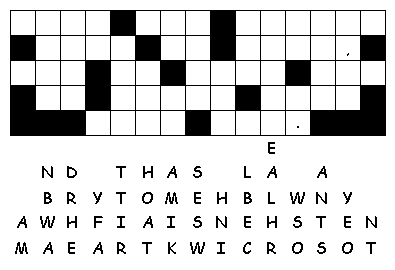

This Week:Amos 8:1-12 and Psalm 52 or Genesis 18:1-10a and Psalm 15, Colossians 1:15-28, Luke 10:38-42
Elementary School Pew-work
Use this code to find the missing words:
The Lord and his disciples were travelling along and came to a . When they got there, a woman named welcomed him into her home. She had a sister named , who sat down in front of the Lord and was listening to what he said. was worried about all that had to be done. Finally, she went to and said, "Lord, doesn't it bother you that my has left me to do all the work by myself? Tell her to come and help me!"
The Lord answered, ", ! You are worried and upset about so many things, but only one thing is necessary. has chosen what is best, and it will not be taken away from her."
1. Whom was Jesus
traveling
with?
__________________________________________________________________________
2.
What did Mary do when Jesus came into the
house?
__________________________________________________________________________
|
3.
What was Martha
doing? 4.
What did Martha want Jesus to
do? 5.
What did Jesus
say? |
 Created by Puzzlemaker at DiscoverySchool.com
|
Next week: Hosea 1:2-10 and Psalm 85 or Genesis 18:20-32 and Psalm 138 Colossians 2:6-15, (16-19) Luke 11:1-13